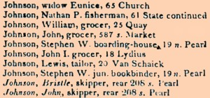

by
Stefan Bielinski
Connecticut native Bristol Johnson was an Afro-Albanian skipper and a veteran of the American Revolution.
He was born into slavery in Middletown, Connecticut about 1755. He served as a private in the first regiment of the Connecticut Line in the American Revolutionary army. A pension application later described his service.
In January 1781, he was emancipated (freed) by Joseph Taylor of Colchester, Connecticut. Shortly thereafter, he married Elvira (Vera) Skinner in Colchester and began to raise a family.
About 1795, he left Elvira and four children in Colchester and moved in with another woman in Middletown. About 1798, he left her behind and moved to Albany.
In May 1810, he purchased a parcel on the north side of Bassett Street in the heart of an emerging neighborhood of newcomers called the South End! His residence near the corner of South Pearl Street was noted in city directories for the next two decades. He was among a number of Afro-Albanian river people including Captain Samuel Schuyler who lived near that intersection. Skipper John Johnson, who lived with Bristol, may have been his son or brother!
In 1813, he appeared before the Albany court where witnesses testified that the fifty-eight-year-old Johnson was a free man and a freeholder within the county of Albany. First identified as a "waterman," he was subsequently referred to as a "skipper."
Bristol Johnson died in Albany in April 1830!

notes
 Sources: The life of Bristol/Brister/Brisker/Bristow Johnson is
CAP biography number 1053. This profile is
derived chiefly from family and community-based
resources.
Sources: The life of Bristol/Brister/Brisker/Bristow Johnson is
CAP biography number 1053. This profile is
derived chiefly from family and community-based
resources.
Detail from the city directory for 1815 listing the Albany Johnsons.
first posted: 1/20/03